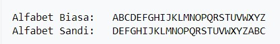

CAESAR

Caesar Cipher merupakan salah satu algoritma cipher tertua dan paling diketahui dalam perkembangan ilmu kriptografi. Caesar cipher merupakan salah satu jenis cipher substitusi yang membentuk cipher dengan cara melakukan penukaran karakter pada plainteks menjadi tepat satu karakter pada chiperteks. Teknik seperti ini disebut juga sebagai chiper abjad tunggal.Algoritma kriptografi Caesar Cipher sangat mudah untuk digunakan. Inti dari algoritma kriptografi ini adalah melakukan pergeseran terhadap semua karakter pada plainteks dengan nilai pergeseran yang sama. Adapun langkah-langkah yang dilakukan untuk membentuk chiperteks dengan Caesar Cipher adalah:
1. Menentukan besarnya pergeseran karakter yang digunakan dalam membentuk cipherteks ke plainteksbad day on Earth.
2. Menukarkan karakter pada plainteks menjadi cipherteks dengan berdasarkan pada pergeseran yang telah ditentukan sebelumnya.
Algoritma dari Caesar Cipher adalah C = E (P) = (P + K) mod 26 untuk fungsi enkripsi. Sedangkan untuk fungsi dekripsi adalah P = D (C) = (C - K) mod 26.
Kelebihan kriptografi Caesar Cipher :
1. Teknik Enkripsi yang paling sederhana.
2. Algoritma cipher tertua dan paling diken al dalamperkembangan ilmu kiptografi.
3. Sangat mudah untuk di gunakan.
Kelemahan kriptografi Caesar Cipher :
1. Tingkat keamanannya rendah , dikarenakan jumlah kuncinya hanya 26 kunci saja.
2. Teknik pemecahan kata kunci tersebut dapat dilakukan dengan cara melakukan pengecekan terhadap semua kunci yang ada yang berjumlah 26 tersebut.
Seperti contoh gambar yang ada
